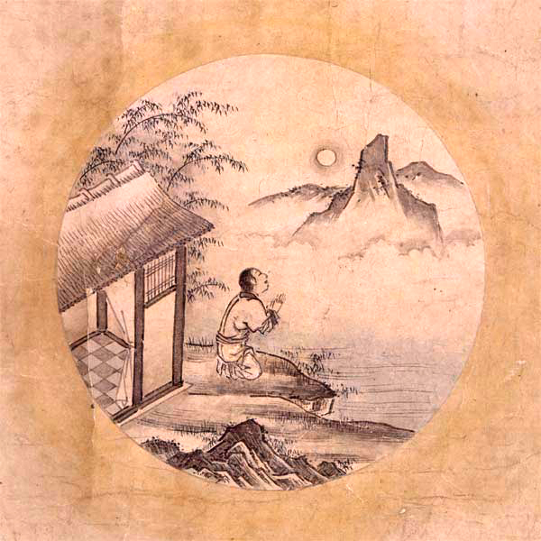

縦乗りの精神分析
縦乗りに関連して起こる精神的な現象について説明します。
自分自身の縦乗りに気付かない
歩いても縦乗り、走っても縦乗り、立っても縦乗り、座っても縦乗り、踊っても縦乗り、手を挙げても、頭を挙げても、手を下げても、頭を下げても、怒っても縦乗り、笑っても縦乗り、何をやっても縦乗り ───日本人の動作には、客観的に見ると即座にそれとわかるはっきりとした特徴があります。
しかし日本人はこの特徴に気付く事が出来ません。何故なら比較対象を持たないからです。
縦乗りに気付く難しさ
縦乗りの人同士でコミュニケーションをしていても、その縦乗りという特徴に気付きません。他者が比較対象として機能しないからです。人は横乗りの人と出会って初めて、そこで縦乗りの存在に気付くことが出来ます。
この横乗りの人と出会った時、彼は、単に比較対象を持つことが出来たに過ぎません。ここで必ずしも縦乗りの存在に気付くとは限らないのです。 そこから彼は横乗りという他者とぶつかりあい、そのぶつかりあいのなかで自分の違いに気付き、更にその自分自身の違いとぶつかりあい、そのぶつかりあっているものが相手の存在ではなく、自分自身の中に潜む自分自身の特質だったことに気付いて、敵が自分自身の中にいることを認識し、その敵と真摯に向き合う覚悟が出来なければ、その縦乗りの存在に気付くことができません。
─── これは仏門の修行に相当する非常に高い困難が伴う精神作業です。十年以上に渡って、その哲学的な差異と真摯に向かいあって自己を探求する事は決して容易なことではありません。
ここではこの縦乗りという自分自身の中に潜む敵と向かい合う為の武器として、これまでに御紹介したリズム理論を駆使し、縦乗りが起こるメカニズムについて説明します。
その為にまず禅思想の十牛図を御紹介致します。十牛図は、縦乗りの人が自分自身の縦乗りに気付くまでの道程と多くの類似点があります。十牛図の意味を知ることは、縦乗りと向き合う為の大切な武器のひとつです。
十牛図
十牛図とは、禅思想で使われる悟りに到るまでの道程を見える化した１０の図のことを指します。 十牛図には数多くの版が存在することが知られており、最も広く知られている版は、宋代の郭安の十牛図と普明禅師の十牛図だと考えられています。
牛飼図は通常、詩と絵からなり、詩自体に短い序文が付いていることもあります。宋代以降、このような作品は数多く作られ、その中でも特に注目すべき3作が「清居」「郭安」「子徳」です。清居の作品は5図、郭安の作品は10図、子徳の作品は6図で、これらの作品の中で郭安の作品が最も完備していると考えられています。

|

|

|

|

|
|  |

|

|
十牛図の意味
これは中国の仏教の学校 学山禅院 の十牛図解説の抄訳です。
『十牛図』は、宋代の禅僧・廓庵禅師によってまとめられた修行の十段階を象徴的に描いた図と詩文です。牛は「本心（仏性）」を象徴しており、牛を探す旅を通して、人間が本来持っている仏性を自覚し、悟りに至るまでの道のりを表現しています。
この十段階は、単なる順番的な修行ではなく、あらゆる瞬間に悟りのチャンスがあることを示しています。文字や形式にとらわれず、心の本質に立ち返ることが重要であると説いています。
1. 尋牛（じんぎゅう）
- 仏性を象徴する「牛」を探し求めて修行を始めたが、まだその牛を見つけることができない状態です。人間は本来仏性を備えているものの、それを忘れてしまい、煩悩や分別の世界に陥って真実の自己から遠ざかっています。
迷いの中で、自分の本心を探し求めている段階です。牛（＝本心）は実は常にそこにあるのですが、私たちはそれに気づかず、外に求め続けます。仏法に出会い、ようやく「本心を探す」必要性に目覚めます。
2. 見跡（けんせき）
- 経典や師の教えを手がかりとして仏性を探そうとしても、依然として煩悩や分別の世界から抜け出すことができず、牛そのものではなく牛の足跡しか見えていない状態です。
ようやく牛の足跡（＝本心の痕跡）を見つけます。日常生活の中の見聞触覚や感情のすべてに、本心の働きが現れていることに気づき始めます。ですが、多くの人はまだ文字や形式に執着し、真実の自心を見失っています。
3. 見牛（けんぎゅう）
- 修行を積み重ねていくうちに、ついに牛の姿を実際に目の当たりにする段階です。真実の自己、仏性を実感し始める境地です。
牛の姿がはっきりと見えてきます。つまり、仏性や本心を直接感じ始める段階です。六根（目・耳・鼻・舌・身・意）を通じて、あらゆる現象の中に仏性の働きを見出します。
4. 得牛（とくぎゅう）
- 牛（仏性）を一度捉えたとしても、それを完全にコントロールするのは容易ではなく、時には逃げ出してしまうこともあるでしょう。修行の難しさと忍耐の必要性を象徴しています。
ようやく牛を捕まえることができました。悟りの感覚が明確になりますが、まだ心は安定しておらず、妄想や習気（くせ）が強く、修行の努力が必要です。
5. 牧牛（ぼくぎゅう）
- 牛をしっかりと飼いならす段階を表します。自分の本性（仏性）を確かに手に入れたら、それを失わないよう注意深く見守り制御する必要があります。修行が深まるにつれ牛は徐々に従順になります。
牛をしっかりと調教していく段階です。日常生活の中で心を見守り、妄想が起きたらすぐに気づくようにします。この「牧牛」の修行が、実際の修行の核心です。
6. 騎牛帰家（きぎゅうきか）
- 牛と牧童（修行者）が完全に一体化し、心の平安が得られた状態を表します。もはや牛を制御する必要はなくなり本来あるべき場所へと穏やかに帰ってきたことを表します。
牛に乗って、ゆったりと家に帰る段階です。心の安定と解放感があり、無理せずとも心が本質と調和しています。悟りの余韻の中で、自然体で生きることができるようになります。
7. 忘牛存人（ぼうぎゅうそんじん）
- 心の本来の場所に戻った修行者は、牛を捉えたことすら忘れてしまう状態を表しています。この段階では、牛（仏性）は自然なものとなり、特別な意識の対象ではなくなります。
牛（仏性）を忘れて、人（主体）だけが残ります。すでに牛は完全に調伏され、意識せずとも心は乱れず、平常心で生活できるようになります。悟りへの執着も消え、「無為自然」の境地に至ります。
8. 人牛倶忘（にんぎゅうぐぼう）
- 牛を捉えようとした理由も、牛を捉えたことも、そしてその行為そのものも忘れ去られた状態を表します。主体と対象の区別が消え、忘れること自体もない完全な無我・無心の境地を表します。
人も牛も共に忘れ去られる段階です。修行の対象や主体すら意識から消え、「無心」「無我」の状態となります。知や言葉の働きも超えており、言葉では言い表せない悟りの深みに達します。
9. 返本還源（へんぽんかんげん）
- あらゆる執着や分別が消え去った清浄無垢な境地に戻った状態を表します。ありのままの世界をあるがままに受け入れ、真実の自己と世界の根源的な姿を認識する状態になったことを示しています。
悟りを得た後、さらに「本来のあり方」へと帰っていきます。悟った人は、世俗にとらわれず、また悟りにもとらわれません。ただ静かに、自然のままに生きる姿が描かれます。
10. 入鄽垂手（にってんすいしゅ）
- 悟りを得たとしても、その境地に留まっているだけでは無意味ということを表しています。再び俗世の中に入り、人々と共に生き、人々に安らぎを与え、慈悲と智慧をもって導くことこそが究極の目的だということを表しています。
最後の段階では、修行を完成させた人がふたたび世俗の中に戻り、見かけは普通の人として生きます。修行や悟りの姿を見せびらかすことなく、人々と自然に関わりながら、仏法を伝えていきます。
縦乗りに気付くまでの道程
モーラ拍言語(日本語)を母国語とする人が自身の縦乗りに気付く過程は、十牛図ととても良く似ています。
- 縦乗りの存在自体に全く気付いていない。
- 縦乗りの存在には気付いたが違いがあるかまではつかみきれない。
- 縦乗りに違いがあることには気付いたが、何が違うかまではつかみきれない。
- 縦乗りとそうでないものの違いを指摘出来る、どこが違うかまではわからない。縦乗りとそうでないもののどこが違うかはわかったが、何故違うかまではわからない。
- 縦乗りとそうでないものを比べて何故違うかわかったが、全体像はつかみきれていない。
- 自分が全ての違いを把握していないということ自体に気付いていない。
- 単独で横乗りで演奏できるようになったが、縦乗り音が聴こえるとつられて縦乗りに戻ってしまう。
- 縦乗りに戻ってしまったことに気付いていない。
- 違いは聞き取れていても、自分自身の身体を動かして非縦乗りの動作を実演出来ない。
- 自分の動作が縦乗りになっていることに気付いていない。
- 自分の動作が縦乗りになっていることに気付いていても縦乗りを直せない。
- 自分の動作が縦乗りになっていることに気付いていても縦乗りを直せるが全ては直せない。
- 意識しないと縦乗り動作を抑制出来ない。
- 意識しないと縦乗りに戻ってしまう。
- 意識しなくても縦乗りに戻らないで横乗りを維持できる。
- 何も意識せずに横乗りを維持できる。
- どんなときでも即座に縦乗りと横乗りを自由自在に切り替えることが出来る。
縦乗りに気付く必要性に気付く
しばしば縦乗りを見た人は自問します ─── そもそも何故縦乗りに気付かなければならないのでしょうか。
- 何故、縦乗りではいけないのか
- 何故、縦乗りに気付く必要があるのか
- 何故、縦乗りを向き合わなければいけないのか
- 何故、縦乗りを知る必要があるのか
- 何故、縦乗りを直さなければいけないのか
- 何故、縦乗りと向き合わなければいけないのか
- 何故、横乗りを知る必要があるのか
- 何故、横乗りと仲良くする必要があるのか
ここで最も大切なことは、「彼は縦乗りの存在に気付いていない訳では無い」ということです。それどころか既に縦乗りに気付いて何度も縦乗りと格闘しその克服の難しさに打ちひしがれて苦しんでいる状態と言えます。
縦乗りに気付けば気付くほど、その解決の難しさと直面し、絶望する。絶望する恐怖からその困難の直視を避けて、責任転嫁しようとする。合理化しようとする。
縦乗りの一方構成
縦乗りには 一方向性 があります。縦乗りと横乗りには互換性がない ─── よってどちらかがどちらかに合わせる必要があります。ところが、横乗りの人は縦乗りに簡単に合わせることができるのに、縦乗りの人は横乗りの人に合わせること容易ではない。これが 縦乗りの一方構成 です。
─── その本質は、既にあるもの頭子音最大化原則（MOP)を抑制すれば頭子音最小化原則（MiOP)に対応できる横乗り＝ストレス拍リズム・シラブル拍リズムに対して、モーラ拍リズムの人はまだないものを全て新規に獲得する必要があるという理不尽ともいえる発音構造上の不平等関係がそこにあるからです。 縦乗り横乗りには、そんな優勢・劣勢の関係がそこに存在します。
日本外の世界の大半の言語は横乗り（シラブル拍・ストレス拍）が基盤になったコミュニケーション方法が根底に一貫しています。 そこで「縦乗り(モーラ拍)でも良いではないか」と主張してしまうと、その場にいる人全員 ─── その場にいる人が二人であれば２人とも ─── その場にいる人が1000人いれば1000人全員に、縦乗りに合わせてもらうことを強制する必要があるからです。
日本以外の世界に出ていくなら、ストレス拍・シラブル拍の認識に歩み寄る必要があるといえます。しかし日本内の世界に留まるなら、ストレス拍・シラブル拍に歩み寄らなくてよいのでしょうか。
実は日本語の方言は、東に行くほどストレス拍リズムが強くなるという説があります。発音の省略が多く早口な江戸弁をはじめ、東北弁の多くは、標準的な日本語とことなり、発音の短縮が多く見られます。また関東・東北の多くの民謡は、完全な縦乗りではなく、しばしば長い弱起が見られます。 ─── つまり横乗りの人は日本国内にこそいます。いかに日本国内であっても広い社会で生活するなかでは横乗りと協調すべき状況は決して少なくありません。多様性への対応力は、豊かさの大切な基盤でもあります。
広い世界に出ていけば出ていくほど、異質な人々と激しくぶつかりあい、縦乗りというイデオロギーを否定されてしまうという現象があります。
その厳しい現実と向き合う人が取るリアクションは、人によって様々です。
勿論ここで「それでも縦乗りでよいではないか」という答えを出すことも可能です ─── 律動図鑑は飽くまでも「敢えて横乗りに打って出るにはどうすればよいのか」という決意をした人への解答を提供することが趣旨のサイトです。ここで前に進むか留まるかを決めるのは、このサイトを読む皆様自分自身でしかありません。
縦乗りと防衛機制
縦乗りとは何か
縦乗りとは
縦乗りとは日本人独特なシンコペーションがないリズムです。
縦乗りの問題
縦乗りの問題は大きく分けて２つあります。* まず日本語を母国語とする人はシンコペーションを認識すること自体に大きな困難があること。* 日本社会でシンコペーションを習得しようとすると、リズムを習得する困難さと向き合う以上に、大きな社会的圧力と向き合う必要があること。
縦乗りの技術的問題
縦乗りと横乗りは同時に演奏できない。
横乗り大音量錯覚について
- 縦乗りの人々にとって横乗りは大音量に聴こえる。
- → 音ずれが音の分離をはっきりさせる。
- → 未体験の音の際立ちに衝撃を受ける縦乗りの人々
- → 「音が大きすぎる！！！！」というリアクション
- 縦乗りセッション社会で、横乗りが排除される構造を生み出す。
縦乗り防衛機制について
- 誰もがグルーヴしたいと思っています！
- →しかし日本語の持つ制約から日本語を母国語とする人は外国のグルーヴを演奏することに大きな障害を伴います。
- → 誰もが海外の音楽に強い憧れを持ち、音楽を志します。そして誰もが音楽に対して人生を賭して莫大な犠牲を払っています。しかし長年の苦労ののちに、実は真の音楽が全く手に入らないものだと気付いた時、人々は精神崩壊の危機にさらされます。
- → そこで日本人独特なリアクションが生まれます。
- → これが縦乗りゴーマニズムです。
縦乗りゴーマニズムとは
- 縦乗りというリズム自体は問題ではない点に注意。
- 横乗りというリズムが手に入らないと気付いたときに、妬み嫉みというネガティブな感情が生まれる。
- 絶望を直視する事を回避する為にあらゆる心理的防衛機制が働きます。
- それがしばしば、グルーヴを志す人への攻撃となって表出します。
縦乗り防衛機制の例
抑圧
不快・苦痛の感情を意識に受け入れがたく、無意識のうちに忘れる・気づかないようにする。これが意図的・意識的である場合は、抑制という。
「えっ？縦乗りなんか気にしてるの、岡だけじゃない？」
否認
現実を自分が知覚していながら、意識から排除して認めないこと苦痛に対して「大したことはない」と思う。
「縦乗りなんて、別に大した問題じゃないですよね？」
退行
早期の発達段階へ戻ること。子ども返り。
「ふざけんなよ！このやろう！（演奏中いきなり怒鳴る）」
転移
特定の人に向けていた感情を、よく似た人（精神分析の治療者)に置き換える。陽性転移は、好意・依存、陰性転移は、敵意や嫌悪の感情を持つ。
「いやー岡さんの演奏、ウェスモンゴメリみたいですね！」「いやー岡さんの言ってること、ジョージ大塚と同じですよね。」
投影
相手に向けての感情を自分のものとして受け止めがたいため、相手が自分に向けていると思う。
「なんでそうやって縦乗りを否定するんですか！？」
反動形成
本心とは逆の言動をする。弱者のつっぱり。
「いや俺、別に横乗りになりたいと思ってないし。」
昇華
反社会的な欲求を、社会的に適応の高いものに置き換える。
「横乗りをマスターしたくて今でも毎日メトロノーム練習続けています。」
補償
劣等感を他の方向で補う。「勉強で負けたら、運動で勝て」
「私この間、ギブソンのビンテージ買ったんですよ！◯◯万円もしたんです！」
合理化
一見理論的であるかのように装うが、実は不都合な現実を歪めたり、都合のよい現実を取り上げて、自分の欲求や感情を正当化する(責任転嫁）。
「岡さんは、そうやって縦乗りを理論的に説明しているようでいて、結局自分自身の劣等感を補償しているだけですよ。その証拠に誰も岡さんに同意している人がいないじゃないですか。現実を直視出来ていないのはどっちなんですか？」
「またリズム警察ですかｗｗｗ」
「リズムおじさんｗｗｗ」
縦乗りゴーマニズムへの対応の難しさ
- 縦乗りゴーマニズムはしばしば、集団ヒステリ的な様相を帯びて、対個人への集団攻撃という現象につながりやすい。
- → 日本社会が持ついじめの構造を持ち始める。
- → 結果的に、セッション社会でグルーヴを志すどころか、リズムについての話題を出すだけで、過敏な反応を受けやすい。
縦乗りゴーマニズムの問題点
- 縦乗りゴーマニズムと遭遇することを恐れる。
- → リズムの話題に触れることが難しい。
- → 横乗りグルーヴを目指している人同士が知り合う機会がない。
縦乗りに対するあるべき対応
- 縦乗りと横乗りのバランスを取る
縦乗りと横乗りのバランスを考える
- バイクを作る
- 確実さと安定を重んずる
- → 縦乗り
- 確実さと安定を重んずる
- バイクに乗る
- 不安定さがもたらす自由を楽しむ
- →横乗り#### 現代日本人として完全な横乗りは破滅を意味する
- 不安定さがもたらす自由を楽しむ
- 実は、縦乗りを捨てれば横乗りになるのは容易い。
- むしろ、いつでも好きなときに横乗りに切り替えることの出来る能力を獲得する。
- そのために、横乗りを縦乗りで再解釈し、切り替える為のトリガとする。
縦乗りの良さを横乗りで伝える
- 演歌・アニソン・ゲーム音楽等々…世界は日本を求めている。
- → しかし縦乗りは横乗りの人々にとって理解不能。
- → 横乗りを習得し、縦乗りを横乗りに翻訳する。
縦乗りの良さを横乗りで伝える
- オフビートメトロノーム練習
- オフビートカウント練習
目次